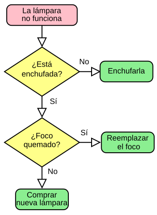
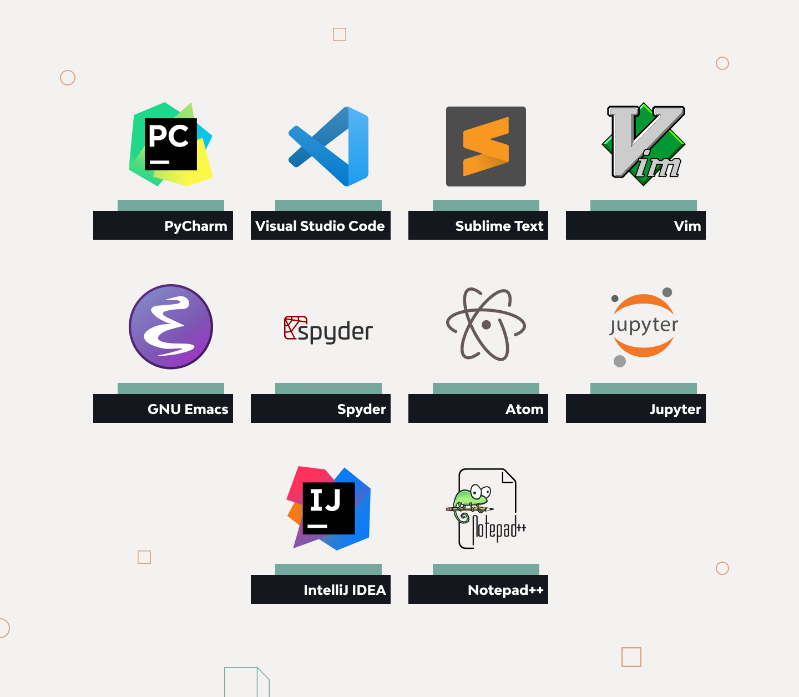
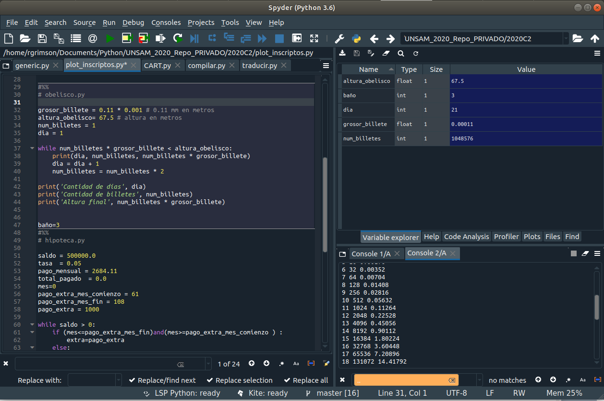
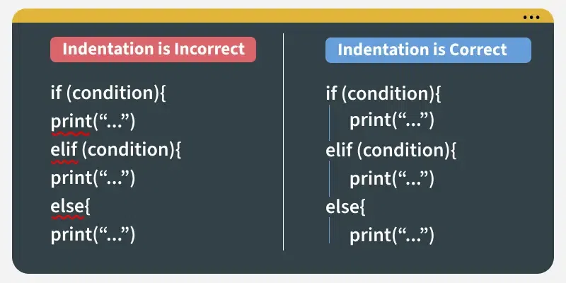
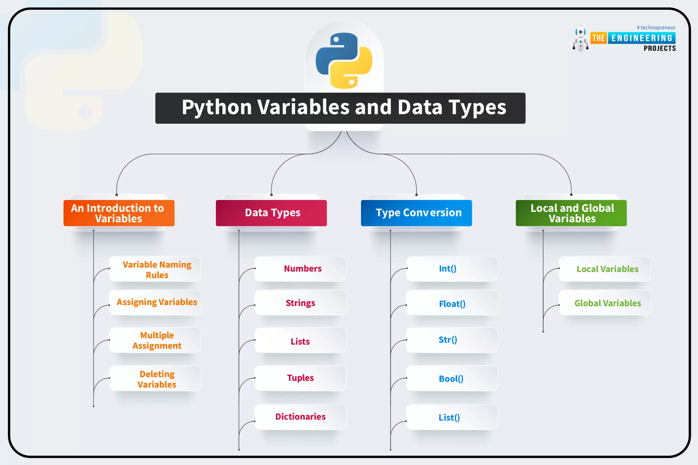

Introducción a la programación
La programación es el proceso de diseñar y crear instrucciones que indican a un ordenador cómo realizar tareas, desde acciones simples hasta sistemas complejos.
- Permite automatizar procesos.
- Se basa en la lógica y el razonamiento estructurado.
- Es una herramienta clave en el desarrollo de software.
Concepto de algoritmo
Un algoritmo es una secuencia finita y ordenada de pasos que permite resolver un problema concreto a partir de unos datos de entrada.
- Debe ser finito.
- Debe estar bien definido.
- Debe producir un resultado.

Entorno de desarrollo en Python (IDE)
Un entorno de desarrollo integra las herramientas necesarias para escribir, ejecutar y depurar programas en Python.

- Editor o IDE (VS Code, Thonny, IDLE): permite escribir código con resaltado de sintaxis y autocompletado.
- Intérprete de Python: ejecuta el código Python.
- Consola y depurador: permite ejecutar y depurar el código Python.

Sintaxis e identación
Python utiliza la identación para definir bloques de código, en lugar de llaves. Una identación incorrecta provoca errores.
¿Qué es la identación?
- Es el espacio en blanco al inicio de una línea de código.
- Indica que las líneas pertenecen al mismo bloque de código.

# Ejemplo de identación correcta. En la siguientes estructura condicional, el bloque de código dentro del 'if' está correctamente indentado.
if x > 0:
print("positivo")
else:
print("negativo o cero")Variables y tipos de datos
Las variables almacenan datos y se crean al asignarles un valor. Python utiliza tipado dinámico, lo que significa que no es necesario especificar el tipo de dato al declarar una variable (a diferencia de otros lenguajes como Java o C++).
Tipos de variables:

# Ejemplo de variables y constantes
PI = 3.14159 # Constante tipo float
radio = 5 # Variable tipo int
area = PI * radio ** 2 # Cálculo del área del círculo
print("El área del círculo es:", area) # Imprime el resultadoNota: Las constantes se definen con nombres en mayúsculas, el resto de las variables con nombres en minúsculas. Si el nombre es compuesto, se utilizan guiones bajos (snake_case) para separar las palabras.